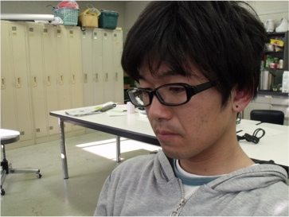

岡本 和晃

| 研究テーマ |
[1] 相変化素材のトポロジカル物性の研究 [2] 強磁性形状記憶合金の電子構造の研究 |
|---|---|
| 出身 | 広島県 |
| 卒業論文題目 | トポロジカル絶縁体の角度分解光電子分光 |
| 原著論文 |
1. K. Okamoto, K.Kuroda, H. Miyahara, K. Miyamoto, T. Okuda, Z. S. Alieve, M. B. Babanly, I. R. Amiraslanov, K. Shimada, H. Namatame, M. Taniguchi, D. A. Samorokov, T. V. Menshchikova, E. V. Chulkov, and A. Kimura
"Observation of a highly spin-polarized topological surface state in GeBi2Te4" Phys. Rev. B. 86, 195304 (2012) |
| 国際学会 |
4. 学会名：The 17th Hiroshima International Symposium on Synchrotron Radiation 題目：Observation of spin-polarized surface state in topological insulator GeBi2Te4 場所：Hiroshima Univ., Japan (2013.3) ポスター発表 3. 学会名：12th International Conference on Electronic Spectroscopy and Structure (ICESS12) 題目：Spin Polarized Topological Surface States in Puseud-binary Chalcogenides 場所：Saint-Malo, France (2012.9) ポスター発表 2. 学会名：The 15th Hiroshima International Symposium on Synchrotron Radiation 題目：Spin-resolved Deeper-lying States of the 3D Topological Insulator Bi2Se3 場所：Hiroshima Univ., Japan (2011.3) ポスター発表 1. 学会名：2010 Japanese-Korean Student Workshop 題目：Electronic Structure of Dirac Cone Material Studied by ARPES 場所：Hiroshima, Japan (2010.9) 口頭発表 |
| 国内学会 |
4. 学会名：第26回日本放射光学会年会放射光科学研究シンポジウム 題目：トポロジカル絶縁体GeBi2Te4のスピン角度分解光電子分光 場所：関西学院大学 (2013.1) 口頭発表 3. 学会名：第３２回日本表面科学科学術講演会 題目：トポロジカル絶縁体GeBi2Te4のスピン角度分解光電子分光 場所：東北大学 (2012.11) 口頭発表 2. 学会名：日本物理学会 2012年・春季大会 題目：MnドープBi2Te3の内殻吸収磁気円二色性分光 場所：関西学院大学 (2012.3) 口頭発表 1. 学会名：日本物理学会 2011年・秋季大会 題目：ホイスラー型強磁性形状記憶合金Ni-Mn-Gaの硬X線光電子分光 場所：富山大学 (2011.9) 口頭発表 |
| 受賞歴 | 1. 賞名：卒業論文発表優秀賞 受賞年月：2011.3 |